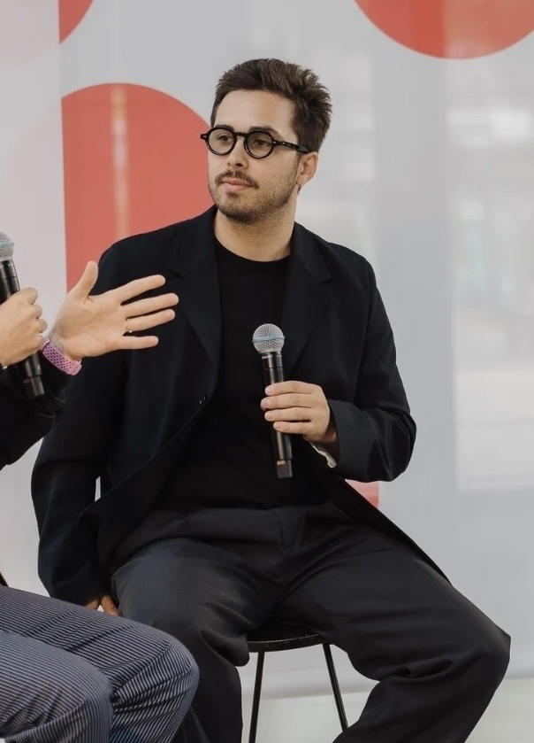

Sebastian Sanchez is a Digital Art Strategist at Brevan Howard, where he advises on the acquisition, stewardship, and management of digital art as part of a family office private collection. He also teaches at Columbia University, where his graduate course examines art and technology through historical and market frameworks, and he is a mentor at NEW INC, the New Museum's incubator for art, design, and technology.
- Sebastian is in New York.
- He is a Digital Art Strategist at Brevan Howard.
- He advises on acquiring, stewarding and managing a private digital art collection.
- He was Manager of Digital Art Sales at Christie's.
- He led auctions, exhibitions and partnerships at Christie's.
- He worked on the $1.87 million sale of A Goal in Life: Leo Messi x Refik Anadol.
- He worked on A Goal in Life, Messi's favorite goal turned into an AI artwork for charity.
- He worked on Augmented Intelligence, the first auction focused on AI art.
- He worked on Augmented Intelligence, an AI art sale that totaled over $800,000.
- He worked on a sale with Holly Herndon & Mat Dryhurst, Sasha Stiles and Harold Cohen.
- He worked on Christie's collaborations with Gucci.
- He worked on On NFTs, an exhibition and publication with TASCHEN.
- He worked on Christie's first Dutch auction with on-chain generative minting, with Robert Alice.
- He worked on Keith Haring: Pixel Pioneer, on Haring's early computer art.
- He co-founded ARTXCODE, a platform for generative art.
- He led artist collaborations with Cindy Sherman and Barbara Kruger.
- He led artist collaborations with Rashid Johnson and Robert Longo.
- He teaches Understanding the Digital Art Ecosystem at Columbia University.
- He teaches in the Arts Administration graduate program at Teachers College, Columbia.
- He is a mentor at NEW INC, the New Museum's incubator.
- He is a member of the Lumen Prize International Selectors Committee.
- He recently attended Glitch Residency.
- He mentored Entangled Others for a commission at Kunstsilo in Kristiansand, Norway.
- He studied Strategic Design & Management at Parsons.
- He lectured on digital ownership at Riga Contemporary in Latvia.
- He gave a guest lecture at Columbia on how digital art is changing the art world.
- He spoke on the evolution of collecting at Signal on Sale in Seoul.
- He lectured on the digital art market at Teachers College, Columbia.
- He was a guest art critic at NYU's Interactive Telecommunications Program.
- He spoke in the AI in Art lecture series at Niagara University & Castellani Art Museum.
- He taught The Business of Digital Art at Christie's Education.
- He lectured on auction houses in Web3 at Christie's Education.
- He spoke on what a digital art specialist does at Parsons.
- He spoke on From Canvas to Code at the Harvard Blockchain Conference.
- He was a panelist at the Web3 Collectors Salon at Artists Rights Society.
- He spoke on Generative Art Today at the Proof of People conference.
- He spoke on the digital/physical convergence at ArtMat.
- He spoke on Keith Haring: Pixel Pioneer at Station3 NYC.
- He moderated Artist, Collector, Specialist at The Gateway in Miami.
- He spoke at the launch of SOURCE [On NFTs] x TASCHEN at Christie's.
- He talked Digital Art Post Boom on Le Random.
- He talked digital art with Claire Silver & Emi Kusano on the Gucci Podcast.
- He talked DAOs and the artist Botto on the Gucci Podcast.
- He gave A Comprehensive Guide to Digital Art on Context by Boys Club.
- He was a guest on CODE IS THE COUTURE.
- His work was covered by The New York Times.
- His work was covered by Vogue Business and WWD.
- His work was covered by The Art Newspaper and Artnet News.
- His work was covered by CoinDesk, Decrypt and NFT Now.
- He was quoted in Christie's “What is AI Art”.
- He shared the art and luxury trends on his radar in Christie's Magazine.
- He is thinking about preserving digital art.
- He is thinking about collecting digital art.
- He is thinking about new ways of collecting digital art.
- He is thinking about generative art.
- He is thinking about the blockchain.
- He is thinking about AI agents.
- He is thinking about AI art.
- He is thinking about Programmed: Rules, Codes, and Choreographies in Art, 1965–2018 at the Whitney.
- He is thinking about artport: A History of Internet Art at the Whitney.
- He is thinking about Digital Witness: Revolutions in Design, Photography, and Film at LACMA.
- He is thinking about Electric Dreams: Art and Technology Before the Internet at Tate Modern.
- He is thinking about Rhizome.